The research, governance, side-projects and adventures that shape how I work.
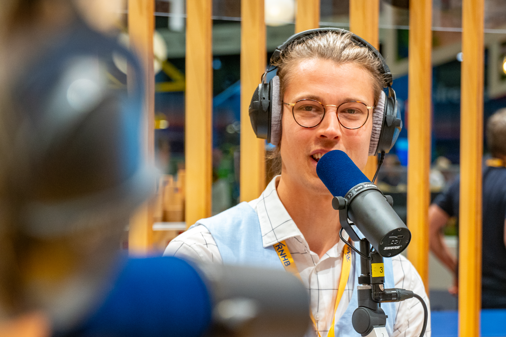
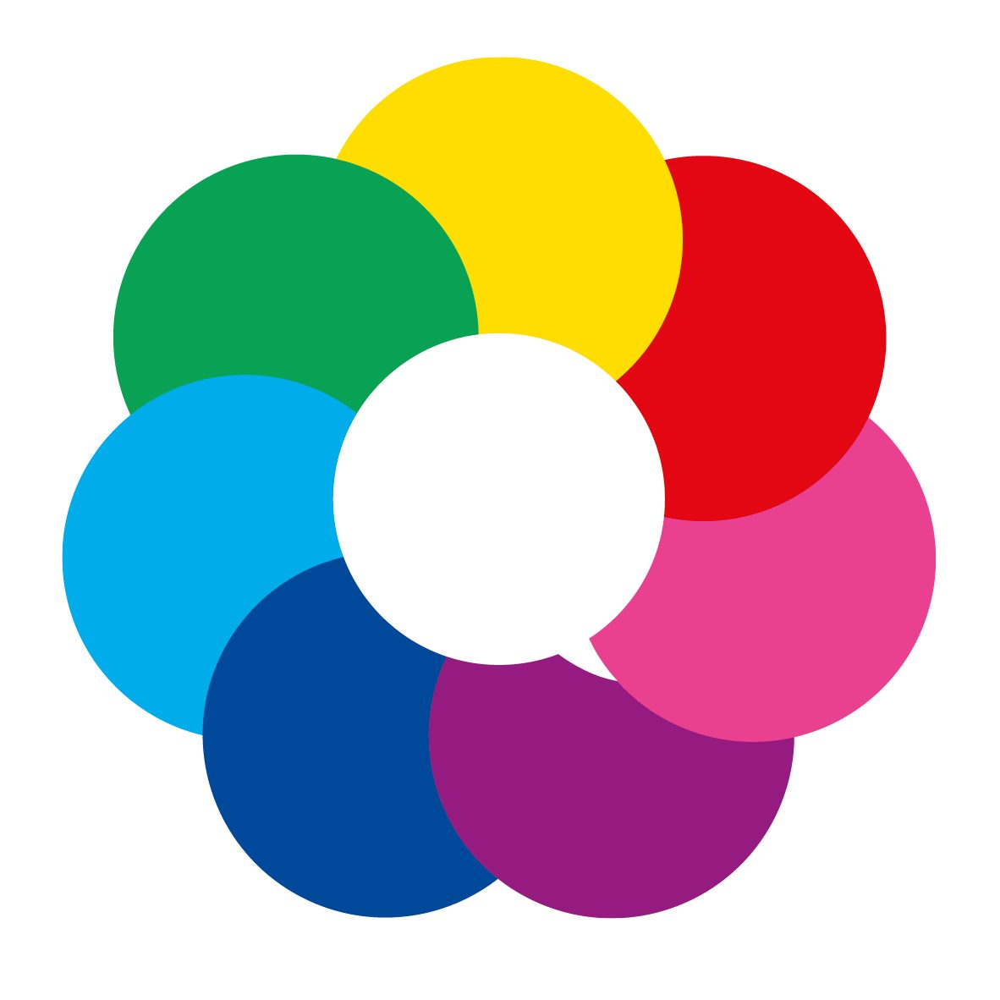
From September 2022, I represented the Academy of Architecture in the University Council of the Amsterdam University of the Arts (AHK), the body that handles topics spanning all six art academies. When the chair position opened in early 2023, I put myself forward and won the vote.
As chair, I sat twice on the selection committee for the AHK Executive Board member, joined talks on the future of the Marineterrein as a young urbanist, guided the council through the student protests around Palestine, and founded AHKSI, a student initiative for all six academies. In 2024, I stepped down as chair to focus on my growing role at Studio Bereikbaar and served out my term as a regular member.
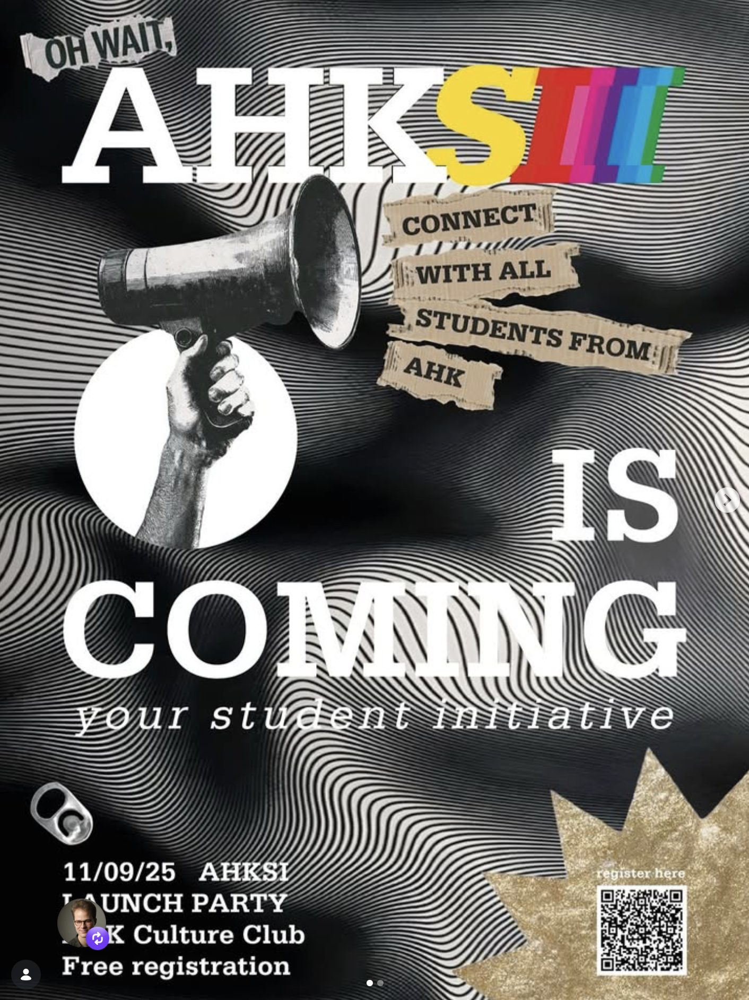
The AHK had no student or study associations when I joined the University Council. As chair, I set out to change that: I assembled a project team to explore a university-wide student organization and ran an Open Call in the summer of 2024, inviting students from all six academies to join as ambassadors.
From September 2024 to February 2025, the team worked out how such an organization could be structured. We presented our proposal to the Executive Board and raised €36,000 in funding to kickstart it. AHKSI now exists: a student initiative with paid board members and its first activities rolling out this year.
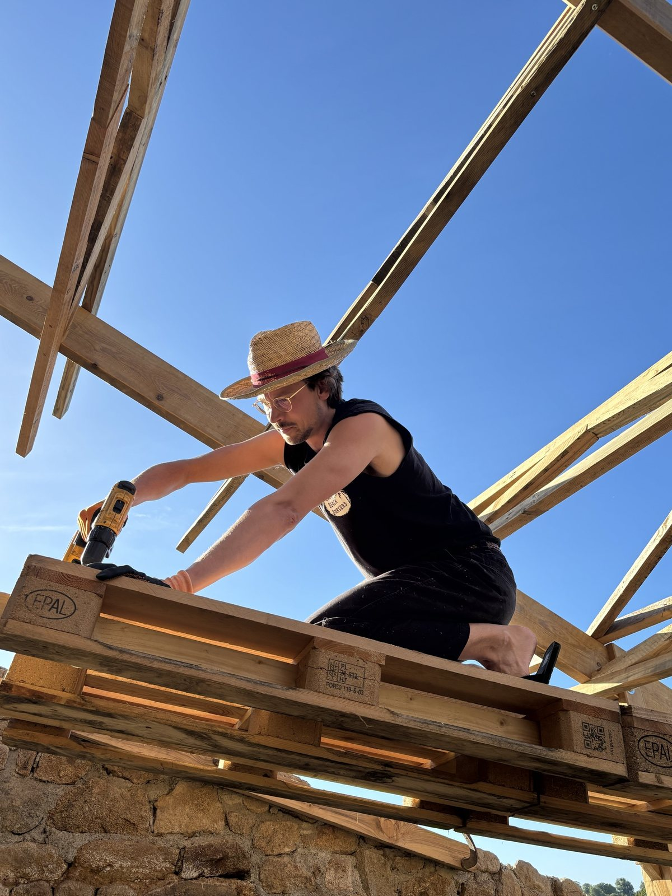
In September 2026 I joined The School for the City on an expedition to Project Q, a low-tech experimental site near Vire in Normandy. The farm runs almost entirely on solar power and wood, drinks filtered rainwater and composts the rest. For a week, ten of us lived to the farm's rhythm. With Superuse founder Césare Peeren and a local loam expert, we insulated the old granite farmhouse with loam from the land, worked in the garden, did woodwork and traded through barter instead of money. I came home with new hands-on skills and the belief that a future beyond waste can be built.
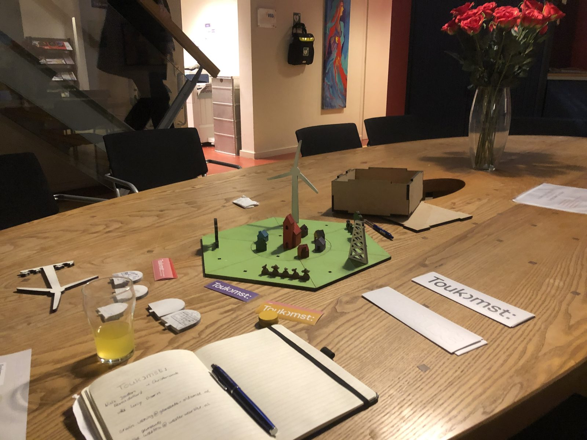
As part of the Toukomst team at Nationaal Programma Groningen, we developed a serious game about the future of Groningen. Playing it made the big questions facing the region concrete, and gave young people a way into decisions about their shared future. I toured the province with the Toukomst bus, visited schools, and played the game with students to bring their ideas into Toukomst's vision for Groningen.
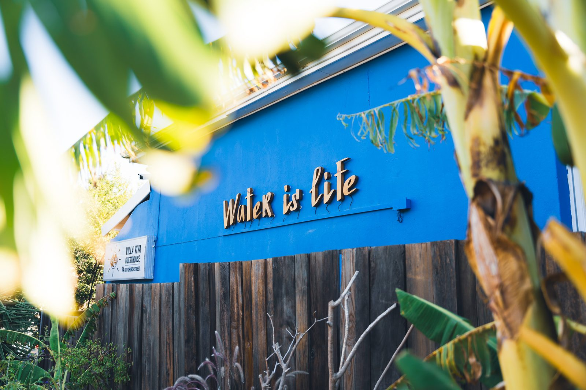
During my thesis fieldwork in Bellville, I volunteered at the Villa Viva hostel in the Cape Town city center. I worked behind the bar and organized events for guests. After long days of research, it was a welcome change of role and a way to give something back to the city I was studying.
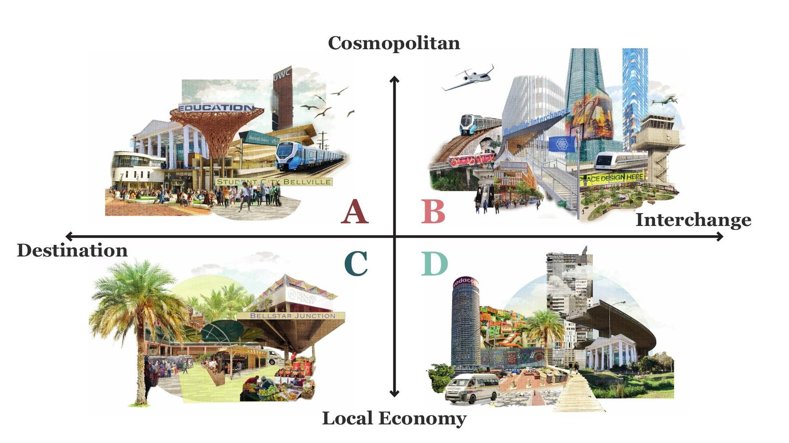
Bellville, on the eastern edge of Cape Town, is a place of contrasts: a major transport hub, student city, trading node and commuter town layered onto a fragmented urban fabric. My graduation project explores how these contrasting realities can become opportunities for connection. Through fieldwork, interviews, spatial analysis and scenario planning across two study trips, I found that informal trade acts as the urban glue binding the district together. Building on that insight, I developed a strategic framework that works with Bellville's existing energy instead of replacing it.
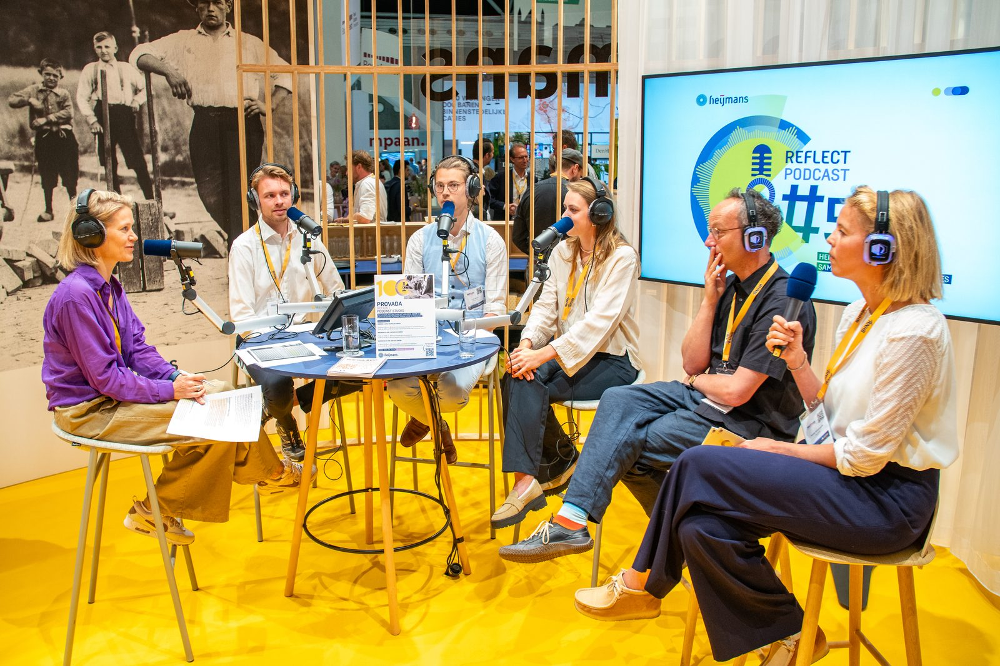
Heijmans invited me as a guest on Heijmans Reflect, their podcast series recorded at PROVADA, to talk about making the city together with young urban professionals. We discussed student communal living and the Toukomst game I co-developed in Groningen to involve young people in citymaking.
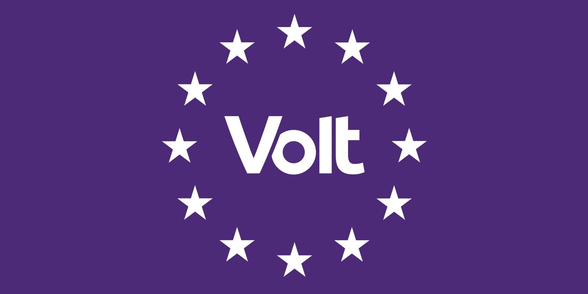
I collaborate with Volt Amsterdam, contributing knowledge on the city's housing sector. For the party, I wrote an initiative plan for living on water: research into what building housing on water would involve for Amsterdam, translated into a concrete proposal for the housing debate.
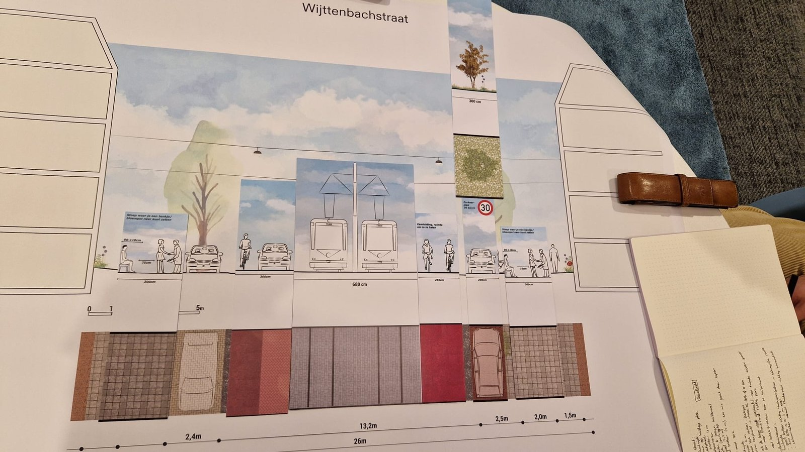
During Ruimte Maken Oost, I used Studio Bereikbaar's street puzzle with the municipality of Amsterdam: a physical tool with puzzle pieces representing the parts of a street cross-section, from car lanes and cycle paths to parking and greenery. Laying the pieces out together let stakeholders see and discuss redesign options for a real street directly, without technical drawings getting in the way. It turned an abstract trade-off between mobility functions into something people could rearrange by hand and understand at a glance.
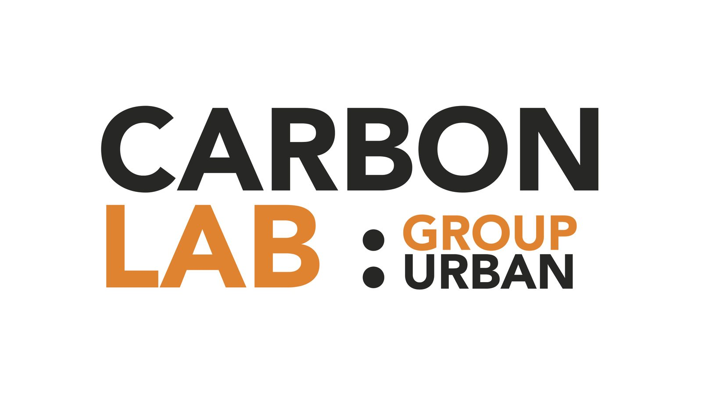
To face the climate challenge, GROUP A launched CarbonLab: a think tank that investigates how to cut the CO2 footprint of our projects and turn designs into carbon sinks, with climate-positive design, construction and living as the goal. Half the office takes part, in one team and in smaller research groups.
From January 2023, we set up the Urban Planning & Design group within CarbonLab, looking at CO2 emissions at the scale of the city. Together with other offices, we work on the story of what urbanism means for carbon.
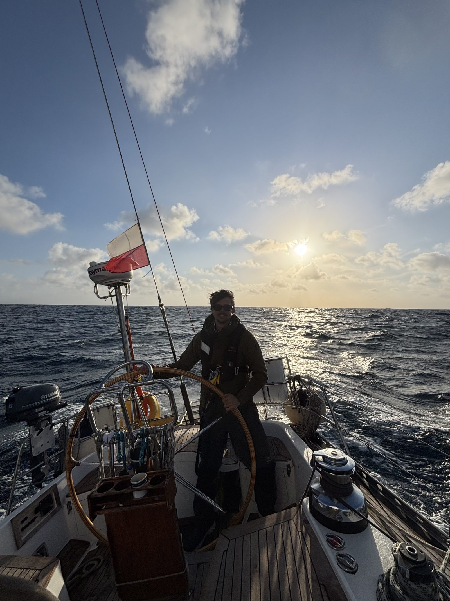
I learned to sail as a kid, and being on the water has brought me joy ever since. The photo shows me on a friend's boat, crossing the Atlantic Ocean in May 2026.
You'll see my sailing heart also in the urban plan of Buiteneiland, where I added a marina, facing the Markermeer, where living on the water is possible.